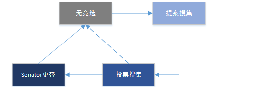

Senators的更替流程和规则
在 HyperExchange 的链上治理和运行中，Citizen 作为社区治理者之一 将参与 Senator 的更替，流程分别如下：
5个安全Senator¶
这5个Senator通过以下流程进行更替：
- 新Senator注册为链上用户(需要花费5HX)
- 注册成为senator(需要花费10000HX)
- 任一现有Senator发起提案，提名新Senator以及要被更替的Senator
- 其他4个Senator确认提案
- 2/3个签名确认提案后新Senator变为候选Senator
- 新的全体15个Senator发起跨链钱包更替流程
- 钱包更替完成，新Senator变为正式Senator，被更替的Senator失去身份
- 新Senator开始获取挖矿及其他收益，被更替者成为普通注册用户
10个竞选Senator¶
这10个Senator更替流程要复杂一些。其流程如下：
1.竞选之前，需要缴纳一定量hc作为保证金
2.新Senator注册为链上用户
3.任一Citizen发起更替提案，此过程详细如下：
- 发起提案的期间应当不处于Senator更替的任何阶段，即处于一个正常的无Senator竞选的状态
- 为保证安全，提名更换Senator一次不能超过3个
- 由任意Citizen发起提案后，整个链处于提案搜集期，持续16000块（约为1天），次周期处于竞选周期的一部分
-
Citizen的所有提案按照以下优先顺序进行筛选（前面条件的优先），最终确认唯一提案
i.提案内支付竞选金额最大优先
ii.Citizen质押资产最多优先
iii.提案确认块早的优先
iv.同一块的块内打包早的优先
4.提案搜集期结束后应选出唯一提案并进入投票期
- 此周期持续80000个块（约为5天）
- 在此周期内全体Citizen可发起投票
- 按照全体Citizen质押资产作为权重，超过2/3权重的Citizen确认提案则提案通过
- 若投票期未达到提案通过条件，此提案作废
5.投票期的提案通过则进入更替期
- 此期间新Senator需提交跨链资产管理信息（即公钥，所有跨链资产都需要，并发起资产转移交易）
- 此周期持续80000个块（约为5天）
- 此期间内若资产完成转移，则新Senator完成更替老Senator
- 超过此周期不提供，提案作废
6.投票期结束后整个链结束竞选周期，此时可以发起新的更替提名
竞选周期¶
竞选周期从链上第一笔提案确认开始计算，到新Senator变更资产钱包完成，开始获得收益结束。竞选周期是一个单线的流程，即无法并行，确保不产生过多的状态，引起不必要的编码错误。

流程中描述的四个状态在竞选流程中已详细描述，这里再汇总整理一下：
- 无竞选 – 此状态下无任何更替提案发起，同时此状态下可以任意发起提案。因此除开竞选周期，HX链应当始终处于该状态。
- 提案搜集 – 当HX链处于“无竞选”状态，并且任意一个Citizen的提案发起并在区块中确认，从此区块开始进入提案搜集状态，此状态持续16000块。到期即时截止。
- 投票搜集 – 提案搜集状态由提案发起，因此必定至少有一个（且只有一个）提案会进入投票搜集阶段。在此阶段全体Citizen需要对此提案进行投票。此状态持续80000块后即时截止。
- Senator更替 – 如果投票搜集阶段有足够的Citizen进行投票（2/3）则进入此阶段，否则会直接回到“无竞选”状态。在此状态内全体Senator发起资产变更交易，并在所有交易全部完成后进入“无竞选”状态，此时新的Senator更替旧的Senator并开始领取收益。此状态持续80000个块，到期即时截止，进入“无竞选”状态，提案作废，原Senator保持不变。
提案成本¶
提案可以由任意Citizen发起，因此在提案搜集期间，可能会有多个提案发起。前面已经描述过提案最终如何确定的过程和原则。这里主要描述一下提案的成本问题：
- 提案是有成本的，即发起提案需要收取一定的手续费，不能少于100HX，但没有上限。
- 提案手续费可以增加，但每次增加都需是100HX的整数倍。
- 这部分手续费不由任何人收取，即时销毁。也就是说只要有提案被打包到块内，该提案内的手续费就被销毁了。
- 即使在提案搜集期结束时并没有被确认为投票提案也不会返还。 提案有成本的原因是为了防止恶意节点无休止的发起提案，正常节点在发起提案时不需要交付过多的手续费，即使一次竞选未能选中，也可以在下次竞选。同时提案确认后仍然需要投票环节，恶意节点即使争取了提案确认权，如无足够Citizen投票支持，仍然无法当选，同时还消耗了HX。